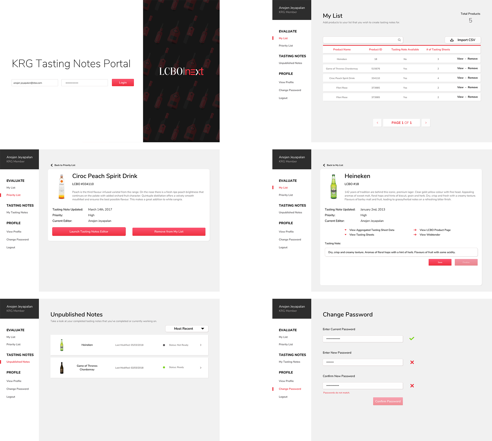

I was with LCBO|next for the winter 2018 term, in which I was responsible for leading the research and design initatives of our projects. We were able to succesfully complete 5 different projects over the term, and these projects are currently in production or in pilot.
Mobile (iOS and Android), Web, and Apple Watch
Sketch, Adobe Creative Suite, inVision, Zeplin, and Principle
2 months (currently in pilot)
User Research, User Survey, Wireframing, Mockups, Prototypes, Animations, A/B Testing
For every LCBO product, a "tasting note" is required to describe the products' taste and flavours. At the LCBO lab, there are product consultants who taste LCBO products and fill out tasting sheets,forms with questions inquiring about the product, via pen and paper. These tasting sheets are then sent to a team called KRG. This team inputs the data provided from the tasting sheets into an internal system and writes a new tasting note for the product based on the consultants' answers.
Both members of the group and product consultants found this process tedious, time consuming and room for large margin of error. From the KRG perspective, they had to look through many sheets, understand consultants' handwriting, manually calculate statistics, and input data. While product consultants viewed the sheets as an obstacle to their tasting process, found the forms too vague and the current process of sending forms to KRG to be redundant.
I decided to run an ad-hoc user study with both stakeholders to identify pain points and potential solutions. Through online conference calls and using inVision to share live wireframe prototypes, I asked several questions to gain insight on how the current flow/app could be improved. Focusing on areas where the current procedure was causing problems and the proposed solution while thinking of experimental features to solve further problems.
I had iterated through three different layouts through A/B testing with future users, finally settling on the one shown below. Users found this design to be the most "straightforward and clean", as well through our testing we found users were able to complete several flows faster by 30% with this layout.
Tasting notes was one of the biggest projects we worked on, but I designed and developed other projects that involved the OCS, and more internal tools for the LCBO. If you would like to know more about those projects, feel free to reach out to me!